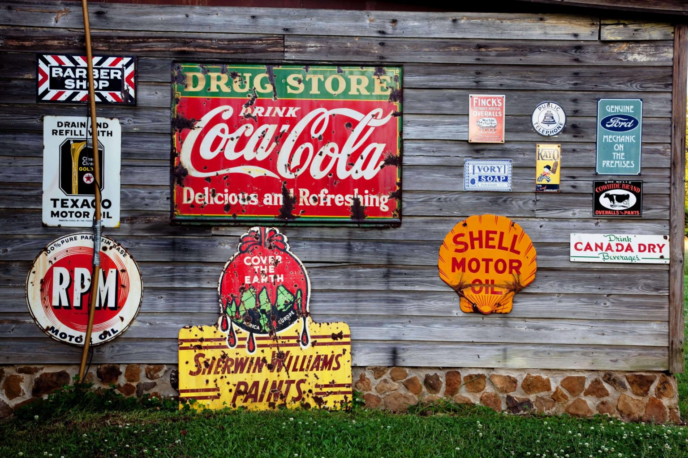

Comenzamos con Blockbuster, esta empresa fue la cadena de alquiler de películas más importante a nivel mundial, fundada en los Estados Unidos en 1985 por David Cook.
Blockbuster llegó a contar con más de 9000 locales distribuidos en varias ciudades alrededor del mundo, convirtiéndose en una empresa bastante popular, para muchas familias el visitar estas tiendas era parte de sus planes de fin de semana, para rentar películas y disfrutarlas en la comodidad del hogar.
Sin embargo, Blockbuster fue perdiendo usuarios debido al auge de la televisión por cable y el éxito de plataformas de streaming como Netflix, los cuales lucían más atractivas para los clientes.
El éxito de Blockbuster terminó en 2010 cuando se declararon en quiebra, cerrando casi todas sus tiendas para el 2013 luego de casi 25 años en el mercado. Para 2018 tan solo quedaba abierto el Blockbuster de la ciudad de Bend en Oregón, que funciona como atracción turística para aquellas personas que les encanta revivir viejos recuerdos.
Esta empresa tiene su antecedente en la Eastman Dry Plate Company y General Aristo Company, fundadas por el inventor George Eastman en 1888 y el empresario Henry Strong en 1889 en Rochester y Jamestown, dos ciudades neoyorquinas.
Durante décadas, Kodak, fue la empresa líder y pionera en el mercado de las cámaras y películas fotográficas (rollos fotográficos). para antes de su época, tomar una fotografía era un lujo que pocos podían darse. Pero Kodak, llegó a cambiar esa realidad, creando cámaras que podían ser manejadas por cualquier persona gracias a su facilidad de uso.
A inicio de 1990, Kodak era una empresa de renombre mundial, su modelo de negocio se basaba principalmente en la venta de películas fotográficas y suministros para imprimir las fotografías, sus cámaras se vendían a precios bajos, aunque sus ganancias eran mínimas, estas se multiplicaban cuando las personas tomaban e imprimían las fotos.
Todo se vino abajo para Kodak con la llegada al mercado de la cámara digital, ya que dejaba de ser necesario tener que ir a revelar los rollos o carretes de películas, pues se podía fácilmente almacenar tus fotografías en un ordenador o memoria USB.
Luego los Smartphone le propinaron la estocada final, al venir equipados con cámaras potentes que toman fotografías de calidad.
Ni los más de 100 años de trayectoria, ni el llegar a poseer el 90% del mercado de la industria fotográfica fueron suficientes para evitar la caída de un gigante como Kodak, quienes en 2012 se declararon en quiebra
Conozcamos el caso del fabricante de unos o sino de los mejores y más resistentes teléfonos hasta el día de hoy, hablemos de Nokia.
El caso de Nokia es tan sorprendente que ha sido objeto de estudio en numerosas universidades en sus cátedras sobre gestión de empresas y análisis de mercado.
Nokia fue líder mundial en telefonía celular, creando productos innovadores y con un alto nivel de calidad estando siempre a la cabeza de las últimas novedades del mercado en su época de auge, posicionándose así como líder absoluto en la fabricación de teléfonos móviles.
Todo parecía ir bien para la empresa finlandesa pues tenía una cuota del 40% de los teléfonos móviles de todo el mundo, tal vez su gran éxito los llevó a que se confiaran y dejaran de innovar en un mercado donde la competencia cada vez crecía más.
Su imperio se vio amenazado en el 2007 con el lanzamiento de un gran contrincante, el IPhone, el primer Smartphone, rival que llegaba no solo para quedarse, sino para desbancar al gigante finlandés que empezaba a sentir su decadencia.
Los analistas coinciden en que buena parte del declive del gigante Nokia la tienen sus entonces directivos al carecer de visión y una alta dosis de soberbia ya que mientras compañías como LG o Samsung se sumaron rápidamente a la tendencia mostrada por el iPhone.
El empeño de Nokia en mejorar la calidad de sus teléfonos y sus propios sistemas operativos como Symbian, no resultaron ser una buena estrategia, por el contrario todo fue un fracaso.
Años después Nokia quiso revertir sus errores y realizó una alianza estratégica con Microsoft para crear un nuevo sistema operativo con nuevos teléfonos, los Windows Phone. Pero ya era demasiado tarde, no pudiendo así, ser dignos competidores contra las grandes marcas que operaban con Android e IOS.
Sin duda alguna el caso de Nokia es muestra de que la innovación es necesaria para cualquier empresa, indiferentemente de cual sea su tamaño, posición o el sector al que se dedique.
Esta empresa es recordada por ser el más grande fabricante de computadoras personales de los años noventa, siendo también la mayor vendedora de computadoras a nivel mundial en el año 2000.
A diferencia de las otras marcas súper gigantes antes de su época como IBM, el objetivo de Compaq era crear computadoras de menor tamaño, portátiles y más asequibles. Y claro, gran parte de su crecimiento explosivo se debió a esto, logrando posicionarse como el principal fabricante de computadoras por encima de IBM e incluso de Apple.
Sin embargo empezaron a tomar malas decisiones administrativas, perdiendo totalmente el enfoque, una de estas malas decisiones fue la adquisición de Digital Equipment Corporation o simplemente DEC por parte de Compaq quienes fabricaban chips para el sistema operativo Unix y no para Windows, el resto es historia.
Compaq se mantuvo como empresa independiente hasta 2002, cuando se fusionó con Hewlett Packard, tras años de vender algunos modelos de computadora bajo la denominación de HP Compaq, ya para el 2013, todas las marcas de Compaq se descontinuaron oficialmente y su sitio web cerró poco después.
Napster fue un servicio de distribución de archivos de música fundado por Sean Parker y Shawn Fanning. Su historia fue muy corta pero con una gran repercusión para el internet de la época.
Napster creó el concepto de compartir archivos en formato MP3 bajo un sistema conocido como peer-to-peer o red de pares, bajo este sistema los usuarios compartían archivos desde sus propios ordenadores hasta el resto de usuarios, convirtiéndose pronto en la forma más popular de compartir música en casi todo el mundo.
Las demandas recibidas por parte de las casas discográficas trajeron a Napster una gran popularidad alcanzando a principios de 2001 un pico de unos 26 millones de usuarios.
Una era de internet donde la piratería y las copias ilegales no estaban debidamente reguladas como lo están hoy en día, descargar música de Napster se veía como compartir un meme en el presente.
Ya para el 2002 Napster se declaró en bancarrota debido a las demandas millonarias que tuvieron que hacer frente. Pero su innovador sistema transformó el internet hasta nuestros días.
No cabe duda que todas estas empresas que lograron posicionar sus marcas a nivel mundial por sus productos icónicos, fueron víctimas de fallas en la gestión empresarial, producto de un deficiente análisis de mercado, escasa valoración de la competencia y desacertadas estrategias de innovación, es por ello que siempre se debe estar enterado de las últimas tendencias de negocio en el ámbito donde te desenvuelvas como empresa, para poder competir sin quedar atrás.
La inyección de recursos económicos para mantenerte siempre al día no debe verse como un gasto sino como una inversión para mantenerte competitivo antes las demás empresas de tu ramo, o por qué no, para la diversificación de tu negocio.
Publicado originalmente en www.directorio247.com junio, 2022
¿Qué otras empresas conoces que hayan tenido problemas hasta llegar a desaparecer o quedar muy atrás en su ámbito de negocio ?
Leer enriquece mentes, expande horizontes y fomenta empatía. Abre puertas a conocimientos diversos, estimula la imaginación y mejora el vocabulario. Con cada página, el mundo se hace más amplio y las ideas más profundas.